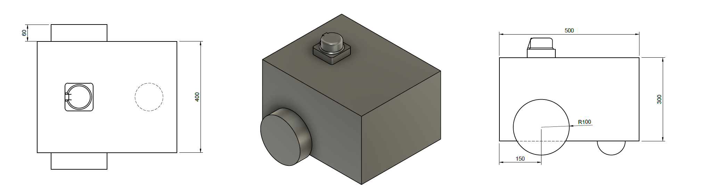
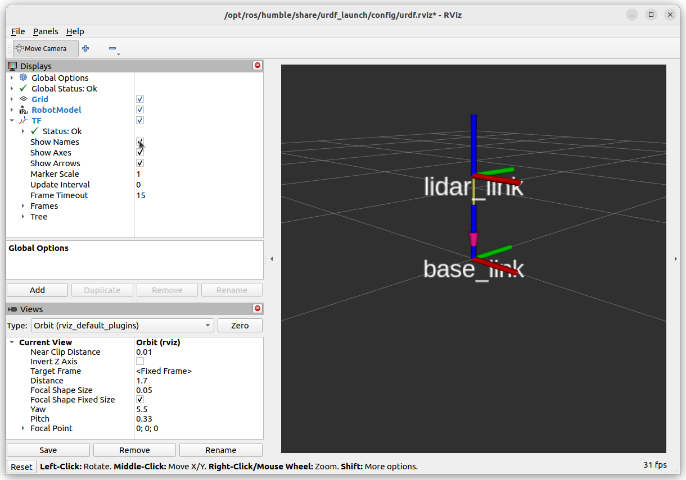

Adding Joints
Let’s build a simple differential drive robot with two continuous joints for wheels and fixed joints for a castor wheel (sphere) and a lidar.
{kind=link}
Make a New Package
Start by creating a new ament-python package called example_urdf_description in a ROS2 workspace, adding a directory called /urdf, then making a blank file diff_drive.urdf.
ros2 pkg create example_urdf_description --build-type ament_python --license BSD-3-Clause --description "Description package for an example diff. drive robot"
mkdir example_urdf_description/urdf
touch example_urdf_description/urdf/diff_drive.urdf
We will also be using meshes in this tutorial, so create a /meshes directory also.
mkdir example_urdf_description/meshes
Don’t forget to add the reference to the urdf and meshes directories and their files in setup.py :
1import os
2from glob import glob
3from setuptools import find_packages, setup
4
5package_name = 'example_urdf_description'
6
7setup(
8 name=package_name,
9 version='0.0.0',
10 packages=find_packages(exclude=['test']),
11 data_files=[
12 ('share/ament_index/resource_index/packages',
13 ['resource/' + package_name]),
14 ('share/' + package_name, ['package.xml']),
15 # Include URDF (.urdf) files
16 (os.path.join('share', package_name, 'urdf'), glob(os.path.join('urdf', '*.urdf*'))),
17 # Include mesh (.stl) files
18 (os.path.join('share', package_name, 'meshes'), glob(os.path.join('meshes', '*.stl'))),
19 ],
20 install_requires=['setuptools'],
21 zip_safe=True,
22 maintainer='DrAndyWest',
23 maintainer_email='andrew.west@manchester.ac.uk',
24 description='Description package for an example diff. drive robot',
25 license='BSD-3-Clause',
26 tests_require=['pytest'],
27 entry_points={
28 'console_scripts': [
29 ],
30 },
31)
Writing the First Fixed Joint
Using your code editor of choice and open the diff_drive.urdf file which was just created. Add the following code:
1<?xml version="1.0"?>
2
3<robot name="diff_drive_example">
4
5<!-- LINKS -->
6<link name="base_link"/>
7<link name="lidar_link"/>
8
9<!-- JOINTS -->
10<joint name="base_lidar_joint" type="fixed">
11 <parent link="base_link"/>
12 <child link="lidar_link"/>
13 <origin xyz="0 0 0.3" rpy="0 0 0"/>
14</joint>
15
16</robot>
There are two links (think of these as seperate coordinate frames), connected by a single fixed joint. The child link lidar_link is 0.3 m (30 cm) in the positive z direction compared to the parent link base_link.
Inspecting the URDF
Navigate to your ROS2 workspace and perform a colcon build, then run the urdf_launch utility:
colcon build --packages-select example_urdf_description
ros2 launch urdf_launch display.launch.py urdf_package:=example_urdf_description urdf_package_path:=urdf/diff_drive.urdf
You should see an image like the one below. Under “TF” in the left panel, it is possible to turn on the names of the links.
{kind=link}
Optional Activity
Try changing the rotation of the child link using rpy. Each rotation is performed in that order relative to the parent link.
Aim to have the +z child = +x parent, +y child = +z parent, +x child = +y parent.
Hint, it can be acheived with two \({\pi}/2\) rotations.
Adding Wheels (Continuous Joints)
As you would have picked up from EEEN62011 Robotic Systems Wheels by convention rotate about their z-axis. Firstly, ensure that the axis of rotation is about the z-axis using <axis xyz="0 0 1"/> and rotate the links relative to the base_link (hence the roll angle in the origin tag).
The wheels have a distance of 0.2m from the base_link along its y-axis.
Modify the diff_drive.urdf file with the following:
1<?xml version="1.0"?>
2
3<robot name="diff_drive_example">
4
5<!-- LINKS -->
6<link name="base_link"/>
7<link name="lidar_link"/>
8<link name="wheel_left"/>
9<link name="wheel_right"/>
10
11<!-- JOINTS -->
12<joint name="base_lidar_joint" type="fixed">
13 <parent link="base_link"/>
14 <child link="lidar_link"/>
15 <origin xyz="0 0 0.3" rpy="0 0 0"/>
16</joint>
17
18<joint name="base_wheel_left_joint" type="continuous">
19 <parent link="base_link"/>
20 <child link="wheel_left"/>
21 <origin xyz="0 0.2 0" rpy="-1.5707 0 0"/>
22 <axis xyz="0 0 1"/>
23</joint>
24
25<joint name="base_wheel_right_joint" type="continuous">
26 <parent link="base_link"/>
27 <child link="wheel_right"/>
28 <origin xyz="0 -0.2 0" rpy="-1.5707 0 0"/>
29 <axis xyz="0 0 1"/>
30</joint>
31
32</robot>
Once again, we can check this is correct using RVIZ:
colcon build --packages-select example_urdf_description
ros2 launch urdf_launch display.launch.py urdf_package:=example_urdf_description urdf_package_path:=urdf/diff_drive.urdf

In it’s current state, this URDF file is good enough for performing coordinate system transformations with TF. Next, we will add some visuals to make the description look more like an actual robot.